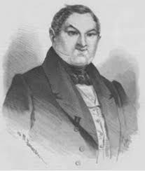

Павел Иванович Чичиков
Главный герой романа, хитрый и расчетливый человек, который пытается обмануть систему, покупая «мертвые души». Чичиков олицетворяет жажду власти и материального благополучия, а его действия ставят под сомнение моральные устои общества.
Манилов
Помещик с мечтательным и бездеятельным характером. Он представляет собой идеалиста, который живет в своих фантазиях и не способен на реальные действия. Манилов символизирует пустоту и бездействие.
Коробочка
Прагматичная помещица, олицетворяющая жадность и меркантилизм. Она очень заботится о своих деньгах и проявляет недоверие к Чичикову, что делает её одной из самых реалистичных и приземленных персонажей.